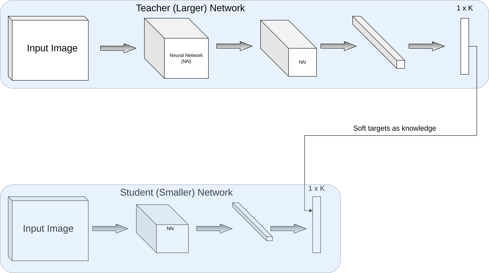

In this post I’ll be discussing about Knowledge Distillation. Basically, I’ll be summarizing the concept from this paper on Knowledge Distillation. Knowledge Distillation is the process of training a smaller network by using the concepts/knowledge that has been learned by the large network. Basically, it is the process of distilling knowledge from one model to another.
Motivation
Larger models have high learning capacity and can perform well when trained on large datasets. This is the pattern followed in Machine Learning. If getting the best accuracy is the only aim then this approach is fine. But when we want to deploy the model in hardware with less compute or time constraints (e.g: deploying models on mobile phones), deploying large models is not an option. We want to have smaller models that perform on par or close to large models but be efficient in computation. The main motivation behind Knowledge Distillation is to use large, complex models during training so that they can extract a lot of concepts from the data and use these models to train smaller models that will be used in inference as they are more efficient (computation and memory-wise) than large models.
Analogy
An analogy from stages of butterfly’s life can be related to the concepts of Knowledge Distillation. They need to eat a lot to gain nutrition and energy. They also need to be light to fly around and mate. Since these are opposite tasks, there are separate forms for such tasks. Caterpillar is the stage that feeds a lot to gain energy and nutrition. Its task is just eating. Once this stage is complete, it is transformed to butterfly for tasks such as flying, mating that require lightweight. The same pattern can be suitable in Machine Learning as discussed in motivation (training a large complicated model and using a small/light model for inference).
Task
The task in Knowledge Distillation is to train a smaller model that performs better than itself trained from scratch. For this, a large model using lots of data to high accuracy will be trained first. This is known as a teacher. It is able to learn a lot of concepts with its large size/learning capacity. For inference, a smaller model is trained using the knowledge acquired by the large model. The small model that is used in inference is called student.
Knowledge
| Input image | |||
|---|---|---|---|
| Predicted class | Car | Truck | Carrot |
| Confidence | 0.9 | 0.09 | 0.01 |
Knowledge is the concept that is acquired by the teacher model, i.e: output of teacher for various images. In the above example, although the model is quite sure that the image is of car, there is something interesting about probabilities of other classes as well. We can see that the model is far more sure about the image being a truck than a carrot. This knowledge is used by Knowledge Distillation to train a smaller model. The model having 0.09 confidence of being a truck and 0.01 confidence of being a carrot is a very useful information. We ignore this knowledge while training a classifier. Knowledge distillation aims to use this knowledge effectively to train the smaller model. It is also called dark knowledge as it exists in the model but is not used for downstream task. Knowledge distillation utilizes this knowledge.
Approach
Soft targets
| Target Type (\(\downarrow\)) Class (\(\rightarrow\)) | Car | Truck | Carrot |
|---|---|---|---|
| Hard targets | 1 | 0 | 0 |
| Model outputs | 0.9 | 0.09 | 0.01 |
| Soft targets | 0.8 | 0.15 | 0.05 |
As seen in the above table, there are three types of targets that denote the class of a given image. Hard targets denote the class to which the image belongs using 1 and the rest of the classes have a value 0. This is also called one-hot encoding. The second row is the example of model outputs without any changes. In the case of multi-class classification, it is the value of softmax that outputs softer distribution than hard targets and all the classes are assigned some probability values. The last row denotes soft targets which are softened by using the temperature parameter in softmax function. As we make the distribution softer and softer, high probabilities will decrease and small probabilities will increase. Making the distribution softer can make the knowledge valuable to student as it can carry the concepts more clearly (in this case the probabilities of each class i.e: model gives the information not just about the image that it is most sure of but regarding other classes as well). In this example, the model can provide information that there are details that are related to truck and carrot (although smaller) which can be a valuable information while teaching the student model.
Softmax function
\[q_i = \frac{exp(z_i)}{\sum_{j}exp(z_j)}\]
Softmax function with temperature parameter
\[q_i = \frac{exp(z_i/\tau)}{\sum_{j}exp(z_j/\tau)}\]
\(\tau\) is called temperature. It controls the extent to which the distribution is to be softened and can be decided by using hyperparameter search.
In PyTorch this can be computed as:
import torch
import torch.nn as nn
logits = torch.tensor([2.8, 0.1, -1]).reshape(1, -1) #output of model for car, truck and carrot
t = 1 #temperature parameter to make distribution soft
softmax = nn.Softmax(dim=1)
softmax(logits/t)
# Outputs
tensor([[0.9178, 0.0617, 0.0205]]) # t=1
tensor([[0.7098, 0.1840, 0.1062]]) # t=2
tensor([[0.5923, 0.2408, 0.1669]]) # t=3
tensor([[0.4877, 0.2842, 0.2281]]) # t=5As we increase the temperature parameter the softmax output changes to a softer distribution.
Training teacher
Training a teacher is similar to training other neural networks. Since the objective is to learn as much as possible so that the student could be taught using the knowledge learned by the teacher, normally large model is trained on large datasets. Teacher can also be an ensemble of models.
Training student
Training a student is the main contribution of Knowledge Distillation. Student is trained using the knowledge gathered by teacher as well as the ground truth labels.
\[p^\tau_T = \text{softmax}(a_T/\tau)\]
\[p^\tau_S = \text{softmax}(a_S/\tau)\]
\[hard\_loss = CE(y_{true}, p_S)\]
\[soft\_loss = KL(p^\tau_T, p^\tau_S)\]
\[KD\_loss = (1 - \lambda) * soft\_loss + \lambda * hard\_loss\]
\(\lambda\) is the weight hyperparameter, \(CE\) and \(KL\) denote Crossentropy and KL divergence respectively.
We can train the student by minimizing KD_loss. As seen from the equation, Knowledge distillation uses both the hard labels and soft labels to train the student model.

As seen in the diagram above, student tries to match the soft targets from the teacher.
Implementation
Simple version of Knowledge Distillation is implemented in this script. It uses MNISR dataset and MLP networks for teacher and student. This implementation uses the same dataset for student and teacher. In a real scenario, one way to train can be training teacher on large data and student on small data using the soft targets from teacher.
Results
Teacher network:
218,960 parameters (3 layer MLP)Student network:
51,450 parameters (3 layer MLP)Teacher accuracy:
97.76Student accuracy without distillation:
95.88Student accuracy with distillation:
96.73
Each training was done for 5 epochs
As we can see the distilled model closes the gap between the model trained from scratch and the teacher model
Conclusion
Knowledge Distillation is an effective approach of training a small model to do well in inference so that it could run on devices with less compute. It has come very far from the paper we’ve discussed. However, the main concept remains the same i.e: training one network by using the knowledge of another network.
Please feel free to leave suggestions and questions if any. I’ll see you in the next one. :smiley: